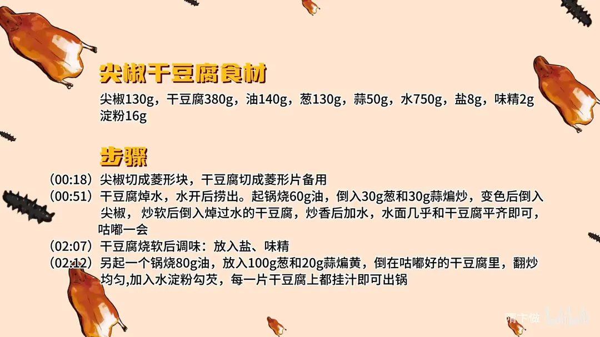

尖椒干豆腐
隋卞一做。干豆腐 380g 配尖椒 130g，都切菱形块；干豆腐先焯水，用 60g 油爆 30g 葱、30g 蒜炒香打底，另起锅 80g 油把 100g 葱、20g 蒜煸黄泼回，水淀粉勾芡至每片挂汁。
原视频：https://www.bilibili.com/video/BV1GctTeeEAV
食材
尖椒、干豆腐 等 9 样
| 类别 | 用料 | 用量 |
|---|---|---|
| 主料 | 尖椒 | 130g |
| 主料 | 干豆腐 | 380g |
| 辅料 | 葱 | 130g |
| 辅料 | 蒜 | 50g |
| 用油 | 油 | 140g |
| 调料 | 水 | 750g |
| 调料 | 盐 | 8g |
| 调料 | 味精 | 2g |
| 调料 | 淀粉 | 16g |
步骤
- 切配：尖椒切成菱形块，干豆腐切成菱形片备用。
- 焯水：干豆腐焯水，水开后捞出。
- 炒香：起锅烧 60g 油，倒入 30g 葱和 30g 蒜煸炒，变色后倒入尖椒，炒软后倒入焯过水的干豆腐，炒香后加水，水面几乎和干豆腐平齐即可，咕嘟一会。
- 调味：干豆腐烧软后调味，放入盐、味精。
- 泼油勾芡：另起一个锅烧 80g 油，放入 100g 葱和 20g 蒜煸黄，倒在咕嘟好的干豆腐里，翻炒均匀，加入水淀粉勾芡，每一片干豆腐上都挂汁即可出锅。
讲解要点
难度：★★☆☆☆（新手可做，难点是把干豆腐「咕嘟」软和勾芡挂汁）
为什么这么做
- 切菱形块（象眼片）、别切太大：块小、截面薄，才能在短时间内煸透、烧透；太大外面软了里面还硬。
- 干豆腐先焯水、开锅就捞：焯水去豆腥，也让干豆腐先软一层；焯完必须马上炒，放凉了会互相粘连。
- 葱蒜量给足、煸到发黄：这道菜的香味主体是葱蒜，量少了就只剩豆味；煸到变色，香味才真正出来。
- 尖椒先炒软：把尖椒的生气味炒掉，剩下的才是辣椒本身的香。
- 用煸过葱蒜辣椒的油炒干豆腐：香味已经在这锅油里，干豆腐一下锅就开始吸味。
- 加水几乎与干豆腐齐平、靠咕嘟不靠炒：干豆腐本身干、组织紧，只有泡在汤里烧软，味才进得去；饭店图快把汤烧干，就只剩「干」和「不入味」。
- 最后补一锅葱蒜油再勾芡：新泼的葱蒜油把香气再提一层；芡把汤汁裹到每一片上，味才挂得住。
容易翻车
- 干豆腐焯完放着不做，粘成一坨、撕不开。
- 水加少了或者火太大把汤烧干，干豆腐又干又硬、没味。
- 尖椒没炒透，一股生青味压过葱蒜香。
- 芡勾得太厚成一锅糊，太薄又挂不上，看每片都能挂汁就够了。
热评补充
- 有东北网友的说法：干豆腐非得是东北产的才有那个味道，原料本身就决定了成菜的上限，外地买不到好干豆腐时只能在做法上找补。
原片尾卡

原片文案
AI 字幕校准稿
每去一次东北，就会被问一次什么时候教这个尖椒干豆腐。来吧，东北菜大白菜——尖椒干豆腐。来北京呢，好像那个干豆腐没有东北那么好，那就在做法上面找点差距。
今儿切菱形块，不要切太大，太大了不容易煸透，一会炒的时候你们就知道。干豆腐切法不太统一，有的是条，有的是菱形片，都无所谓；这样弄成条还是少切几刀。这在刀工上叫象眼片。
准备工作做完了，把干豆腐焯下水，烧开就可以了。干豆腐焯完水之后就要迅速做，要不然过凉放着不做，一会就全粘一块了。
锅烧热放底油，把葱和蒜倒进去，葱和蒜适当多一点，煸出香味、变色了，就把尖椒倒进去，要把尖椒炒软，把尖椒的生气味炒掉。看锅里的蒜和葱也变色了，都黄黄的，尖椒也都炒透了，把干豆腐放进去，用葱蒜辣椒煸炒过的这个油来炒干豆腐。
然后咱们要加水，水几乎跟这个干豆腐平就差不多。尖椒干豆腐好吃不好吃，这是最关键的一步：你去外边吃好多饭店都不是那个味儿，他就把这锅给烧了，干豆腐真干且不入味。它不是炒出来的，是咕嘟出来的，把干豆腐一定得烧软，让所有的味道都融合在一起。
这会儿咱们可以调味了，盐、味精，别的就不放。然后再开锅，里边放点葱和蒜——这一步可能好多师傅都不用——给它煸黄、煸香，我们把它倒到干豆腐里边。这时候就可以勾芡，每一片干豆腐上面全都有汁，这样就可以了，出锅。
好好吃啊！这干豆腐完全已经煮软了、煮嫩了、煮滑了，青椒的香味、蒜香味、葱香味完全进入到干豆腐的里面了，干豆腐的每一个毛孔都给吸进去了。
最后补的那一点，让它的葱香味和蒜香味变得更浓；传统的是没有这一步的，但最后加的这一步是锦上添花，层次感就更多了。